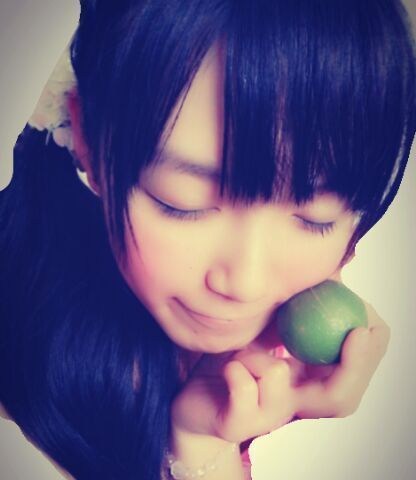

| 2013/09 06 Fri | ひめたん(*>ω<*)そ の338 |

はい、かぼすっ
ままね、みなさーんにお祝いしてもらって
とってもとっても喜んでたよ！
ままのかわりに伝えるねーありがとー＼( ^O^ )／
ままはハタチになったそうです！
ほーらひめたんが育った環境が
なんとなーく見えてきたでしょー
ちなみにぱぱままに
お揃いの部屋着をプレゼントしたよー♪
いつまでも仲良しさーんでいてね///

うふえー
ツッコミどころ満載のこの写めが
ひめたんはだーいすきでーす
これ８回くらい撮り直したリアルに！
あんねセルフタイマーってやつで撮ったからね
写真一枚につき10秒とかかかるのー
もうねーげーらげら笑ってたんだけどな
面白さ伝わるといいな(´・ω・｀)
おーおーさっそく
＼遠／＼見えねーよ／とか聞こえるぞー
あっせめて誰が写ってるかくらいは
把握しておいていただきたいな
ひめたん・あしゅ・ちまひなですよー
あっあのねあのねあのね！
１ヶ月くらい前にヘッドホン壊したーって
ブログで書いたと思うけどね
とうとう新しいの買ったー＼( ^O^ )／
買いに行くにいけなくて
しばらくままの真っ赤なヘッドホンを
勝手に、勝手に拝借させていただいておりましたが
勝手に拝借させていただいておりましたがしかしっ
もー自分の使ってるんだからねー
今度こそは長ーく可愛がってあげよーと思！
周りの音がまじで聴こえないから
おともだちには
「外で歩きながら音楽聴かないでよ(´・ω・｀)」
って言われたよー
あとは妹がおうち帰ってきて
ぴんぽーん押したのに
あたしが聞こえないから
しばらくおうち入れなかったって(´・ω・｀)笑
すーごめんねーもっかい謝っとくねー(´・ω・｀)
ねーこだわりある方はよかったら
ヘッドホントークしよーー
青森組さん頑張ってねー！
ひめたんは明日も...学校や...うはああ楽しみ...
はい、かぼすっ
ままね、みなさーんにお祝いしてもらって
とってもとっても喜んでたよ！
ままのかわりに伝えるねーありがとー＼( ^O^ )／
ままはハタチになったそうです！
ほーらひめたんが育った環境が
なんとなーく見えてきたでしょー
ちなみにぱぱままに
お揃いの部屋着をプレゼントしたよー♪
いつまでも仲良しさーんでいてね///
うふえー
ツッコミどころ満載のこの写めが
ひめたんはだーいすきでーす
これ８回くらい撮り直したリアルに！
あんねセルフタイマーってやつで撮ったからね
写真一枚につき10秒とかかかるのー
もうねーげーらげら笑ってたんだけどな
面白さ伝わるといいな(´・ω・｀)
おーおーさっそく
＼遠／＼見えねーよ／とか聞こえるぞー
あっせめて誰が写ってるかくらいは
把握しておいていただきたいな
ひめたん・あしゅ・ちまひなですよー
あっあのねあのねあのね！
１ヶ月くらい前にヘッドホン壊したーって
ブログで書いたと思うけどね
とうとう新しいの買ったー＼( ^O^ )／
買いに行くにいけなくて
しばらくままの真っ赤なヘッドホンを
勝手に、勝手に拝借させていただいておりましたが
勝手に拝借させていただいておりましたがしかしっ
もー自分の使ってるんだからねー
今度こそは長ーく可愛がってあげよーと思！
周りの音がまじで聴こえないから
おともだちには
「外で歩きながら音楽聴かないでよ(´・ω・｀)」
って言われたよー
あとは妹がおうち帰ってきて
ぴんぽーん押したのに
あたしが聞こえないから
しばらくおうち入れなかったって(´・ω・｀)笑
すーごめんねーもっかい謝っとくねー(´・ω・｀)
ねーこだわりある方はよかったら
ヘッドホントークしよーー
青森組さん頑張ってねー！
ひめたんは明日も...学校や...うはああ楽しみ...

 ひめたんビームって練習したら
ひめたんビームって練習したら
俺でも使えるようになる？
ひめたんビームじゃなくて
俺さんビームになるんだろうなー( ω )
威力うんぬんは置いといて、
ビームはすーぐマスターできると思！
握手会のときに、あだな付けてっていったら
つけてくれますか ？
いーよー◎
なんか特別なあだ名つけるのって
ぐっと仲良しになる感じしていいよね！
最近になって毎回絶対ブログにコメしてるけど
見てくれてるかなー？笑
みてますみてますよー
もうねーいつも元気になるよー
いつもほんとにほんとにありがとーうっ(´;ω;｀)
これからも気軽になんか書いてってね♪
元気になりたいとき
乃木坂の曲でなにがおすすめですか?**
落ち込んでる時は「心の薬」かなー
もっとテンションあげたいーって時は
「ガールズルール」とかいいんじゃないかな♪
 ライブ中ひめたんずっと
ライブ中ひめたんずっと
すんごい目開いてるように見えたんだけど、
疲れないのー？
自分じゃ無意識だった！苦ではないよー
なんでかねーひめたんはかまえないと
びーむなんて出るはずないのにねー♪
いつも私は、ひめたんビームしながら
ウインクしてるんだけど、ありですか？
強っ(゜O゜ノ)ノ！
それは本家も真似するしかごにょごにょ
ひめたんはくすぐられたりするの大丈夫？
苦手な所とかある？
弱いです。どっこつつかれても弱いです。
でもね誰かにこちょこちょするの好きです
それて相手が効かない人ってわかったら
うううううぅぅってなる。
全握でひめたんのキス顔にやられました。
２１日キスしに行ってもよろしい？←
あーもーちょっと
そーゆーことはヒミツにしとかないと
だめでしょ？ね？///
ひめたんは、テストをどうやって乗り切る？
まずテスト３日前に挫折します
そしてテスト週間中は基本的にぐっすり寝てます
だからいつもストレスフリーだよー(｀・ω・´)
...参考になったかな。いや参考にしちゃだめよ
コメ数が一気に増えて
ひめたん本当に嬉しくて毎日泣いておりますっ
いつも本当に本当にありがとうっ！
最近更新頻度いいねーって
なつきにも褒められたんだよー
ちなみになつきってのは隣のクラスの子だよー
これからもひめたん
とっ散らかったブログいっぱい書くから
みなさーんもたくさん遊びにきてねっ
 ！
！

今日は学校で一度も寝なかった！褒めてー♪
(＊´・ω・＊)
コメント(333)
2013/09/06 20:36